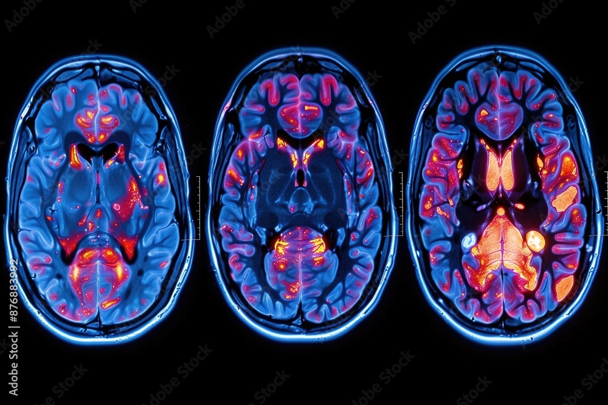

Publications

Joshua Jin, James Doan, Cassandra Fernandez, Samuel Nguyen, Cole Spencer, and Alexander M. Kleschevnikov
Experimental Neurology, 386, 115171 (2025). DOI.
Niveda Rao, Geoffroy Noel, Thomas Spence, Catherine Shaw, James Doan, Lipika Gangakhedkar, and Stephanie Barajas
Anatomical Sciences Education, 16(6), 1218–1348 (2023). DOI.
Conferences
Niveda Rao, Geoffroy Noel, Thomas Spence, Catherine Shaw, James Doan, Lipika Gangakhedkar, and Stephanie Barajas, “Poster Presentation Abstracts, 27th Annual Conference of the International Association of Medical Science Educators” (June 10–13, 2023), Medical Science Educator, 33(1), 21–89. DOI.
Experiences
The Argen Corporation
Built UI features for manufacturing workflows and maintained Domo API integrations with Ignition.
Service
UC San Diego
Department of Psychology
Instructional Assistant
UC San Diego Centers for Integrative Health
Center for Mindfulness
Mindfulness programming, university data and reporting, and continuing-education records
Miscellaneous
Beyond data science, I also find myself to be a medicore rock climber. Indeed, I am often able to climb V6, maybe V7 on a good day -- albeit, these gyms are quite sanbagged. I also lion dance, but not as much anymore. If you ever want a good deal on lion dance shows, please contact me, for I will be able to quote you the best prices for lion dance performances if you are in my troupe's area.